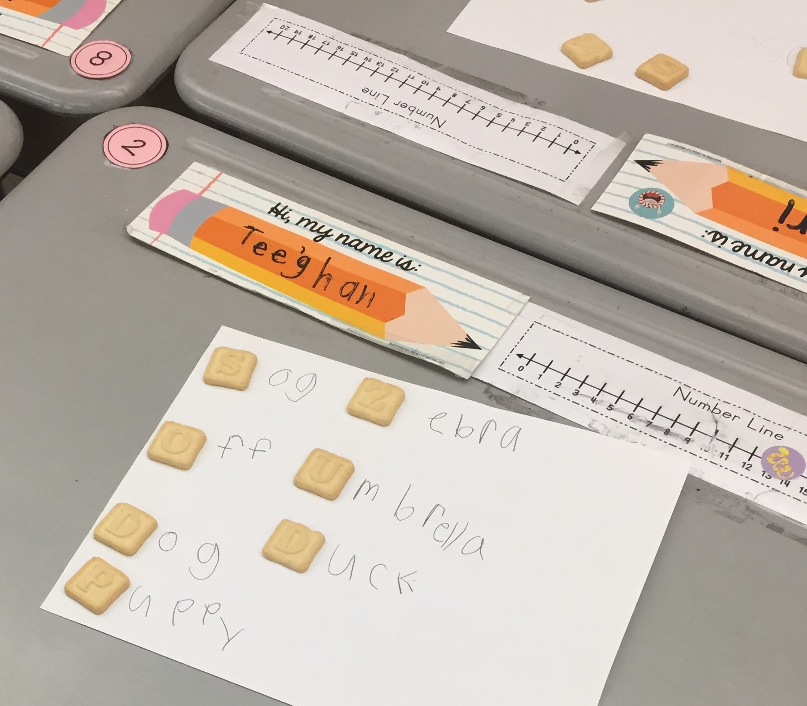
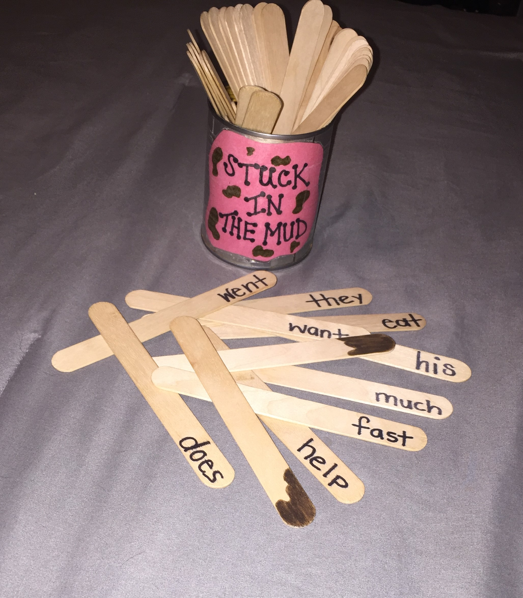
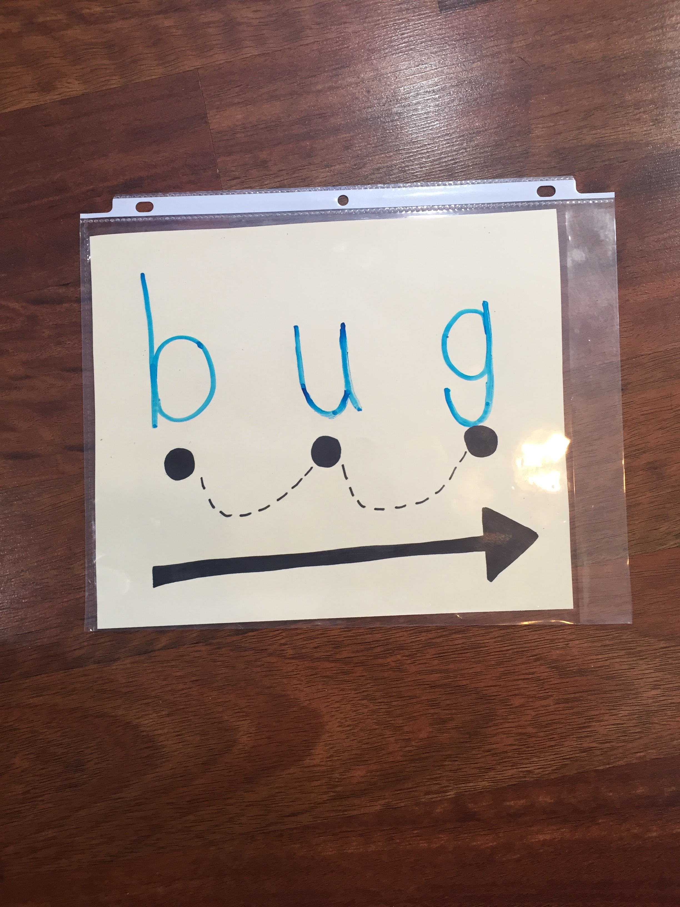
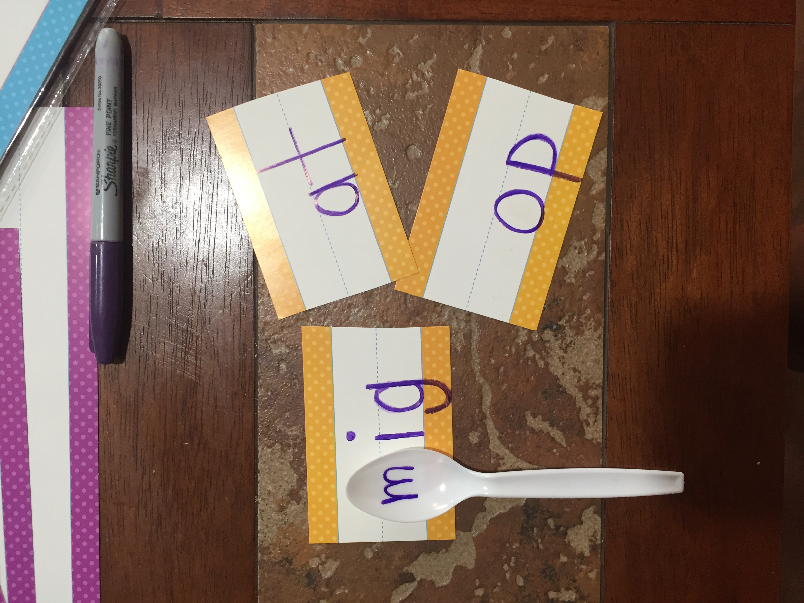

Home Strategies- Addressing Reading Deficits
Basic Reading Skills To Practice:
I am going to list basic skills that every child needs to master in order to maintain oral reading skills. This skills below are all areas that you can review at home with little resources that can be handmade or even found at the dollar store. When looking for a starting point I would go through the list below:
- Letter Identification
- Letter Sound Identification
- Idenityfing words with the same beginning sound
- Segmenting Sounds in words. Examples: b/a/t-Bat......d/o/g- dog
- Identifying the middle & ending sounds
- Rhyming Words
- Blending Sounds (Real & Nonsense Words) Examples: /a/t-at..../o/p/-op...../ch/a/t/-chat..../bl/o/p/-blop
- Sight Words Review (can be found online by grade level, sold in packs at the dollar store or target, or ask your child's teacher)
Strategies/Activity Ideas:
- Page Protectors are an easy tool to change up a way to practice a skill or complete a workheet! Just slide the paper into the sheet protector and use some dry erase markers. Could even place a solid color of construction paper in it and use it for a plain whiteboard.
- Using Fly Swatters to make a game. I use sight word swat often in my classroom, I write down a bunch of sight words either on the board or on big poster board and have one child or two at a time use the swatters and find the sight word I say. This could be done with letters of the alphabet, you saying the letter and the child finding it our you saying the sound and the child finding the lettr that makes that sound with the swatter. They will love it!
- Playdough can be a hands on way to form letters and build words as well.
- Popsicle sticks can always come in handy. Pinterest is full of ideas with popsicle sticks for reading! We have "reading sticks" that we utilize in the classroom when reading in our intervention biners. I hot glued a googley eye to all of the sticks and you would be surprised at how effective adding something like this can be. They get excited to use them! On occasion we use finger puppets when reading larger print on the board. I have found them at target previously.
- You will see in a picture below, one of my student's favorite sight word games and I would even add their spelling words to the bin each week too. This game is called Stuck In The Mud. All of the sticks have words on the bottom and a couple have "mud". They take turns pulling sticks, if they read the word correctly, they get to keep it, if they do not they must put it back, if a student pulls a "mud" stick they have to put all of their sticks back.
- Various sight word packs can be found at the dollar store, I have purchased 4-5 different ones myself.
- In the pictures below, you will find some more ideas and some of the things I listed above. Everything in those photos were purchased at the dollar store.
Dollar Store Resources:
- Page Protectors
- Dry Erase Markers & Erasers
- Fly Swatters
- Alphabet Poster
- Alphabet Letter Cookies
- Popsicle Sticks
- Construction paper
- Sight Word Pack
- Plastic Spoons
- Pladough
 
 